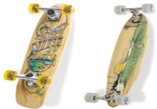

Skateboards
A skateboard is a four wheeled platform used for the activity of skateboarding. It is propelled by pushing with one foot while the other remains on the board, or by pumping in structures such as a half-pipe. A skateboard can also be used by simply standing on the deck while on a downward slope and allowing gravity to propel the board and rider. That having been said, there is no governing body which declares any regulations on what constitutes a skateboard or the parts from which it is assembled. For example, longboards are a type of skateboard with a longer wheelbase and larger and softer wheels. Thus, the definition of a skateboard can vary in shape, size, overall appearance, as well as in aptitude for performance.
Decks
Most decks are constructed with a seven-ply cross-laminated layup of Canadian maple. Sometimes other, more exotic materials, such as fiberglass, bamboo, resin, Kevlar, carbon fiber, aluminum, or plastic are incorporated into deck construction, usually to lighten the board or increase its strength or rigidity. Modern decks are usually 7 to 10.5 inches wide although they can vary. The width of a deck depends on personal preference though most people use 7.5-8 inch wide decks for street skating. Generally, riders use a wider deck for vert, to provide more stability. Skateboard decks are usually between 28 and 33 inches long. The underside of the deck is usually printed with a design by the manufacturer. The longboard, a common variant of the skateboard, has a longer deck. "Old school" boards (those made in the 1970s-80s or modern boards that mimic their shape) are generally wider and often have only one kicktail. 1970s variants often have little or no concavity, whereas 1980s models have deeper concavities and steeper kicktails. Grip tape is used to give a skater's feet more grip on the deck. It usually has an adhesive back and a sandpaper like top.
Trucks
Attached to the deck are two metal (usually aluminum alloy) trucks, which connect to the wheels and deck. The trucks are further composed of two parts. The top part of the truck is screwed to the deck and is called the baseplate, and beneath it is the hanger. The axle runs through the hanger. Between the baseplate and the hanger are bushings, also rubbers or grommets, that provide the cushion mechanism for turning the skateboard. The bushings cushion the truck when it turns. The stiffer the bushings, the more resistant the skateboard is to turning. The softer the bushings, the easier it is to turn. A bolt called a kingpin holds these parts together and fits inside the bushings. Thus by tightening or loosening the kingpin nut, the trucks can be adjusted loosely for better turning and tighter for more control.
Wheels
The wheels of a skateboard, usually made of polyurethane, come in many different sizes and shapes to suit different types of skating. Larger sizes like 65-90 mm roll faster, and also move more easily over cracks in pavement. Smaller sizes like 48-54 mm keep the board closer to the ground, require less force to accelerate and produce a lower center of gravity, but also make for a slower top speed. Wheels also are available in a variety of hardnesses usually measured on the durometer 'A' scale. Wheels range from the very soft (about 75a) to the very hard (about 101a). As the scale stops at 100a, any wheels labelled 101a or higher are harder, but do not use the appropriate durometer scale. Some wheel manufacturers now use the 'B' or 'D' scale, which has a larger and more accurate range of hardnesses. Modern street skaters prefer smaller wheels (usually 48-53 mm), as small wheels make tricks like kickflips and ollies easier. Street wheels also need to be quite hard, as small soft wheels absorb too much energy. Vert skating requires larger wheels (usually 55-65 mm) as vert skating involves high speeds that smaller wheels are unable to sustain. Vert wheels are usually very hard, so they can roll faster. As they are only used on ramps and parks that are smooth they are usually on the harder end of the durometer scale. Slalom skating requires even larger wheels (60-75 mm) to sustain the highest speeds possible. They also need to be soft and have better grip to make the tight and frequent turns in slalom racing. Even larger wheels are used in longboarding and downhill skateboarding. Sizes range from 65 mm right up to 100 mm. These extreme sizes of wheels almost always have cores of hard plastic that can be made thinner and lighter than a solid polyurethane wheel. They are often used by skateboard filmers or videographers, as the large soft wheels allow for smooth and easy movement over any terrain.
Bearings
Each skateboard wheel is mounted on its axle via two ball bearings. With few exceptions, the bearings are the industrial standard "608" size, with a bore of 8 mm, an outer diameter of 22 mm, and a width of 7 mm. These are usually made of steel, though silicon nitride, a high-tech ceramic, is sometimes used. Many skateboard bearings are graded according to the ABEC scale. The scale starts with ABEC1 as the lowest, 3, 5, 7, 9. It is a common misconception that higher numbers are better for skateboarding, as the ABEC rating only measures tolerances which do not necessarily apply to skateboards. The ABEC rating does not determine how fast or how durable a bearing used for skateboarding will be. In particular, the ABEC rating says nothing about how well a bearing handles axial (side-to-side) loads, which are severe in most skateboard applications. Many companies do not show the ABEC rating, such as Bones Bearings, who are known for their high quality bearings.
Hardware
Mounting hardware is a set of eight 10-32 bolts, usually an allen or cross head, and matching self-lock nylock nuts. They are used to attach the trucks to the board. Some have a different colored bolt to show which side is the nose of the skateboard.
Source:Wikipedia